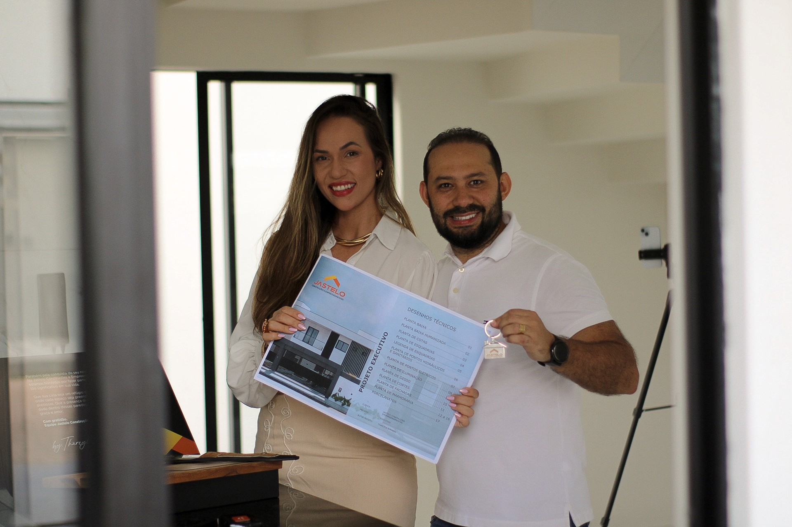
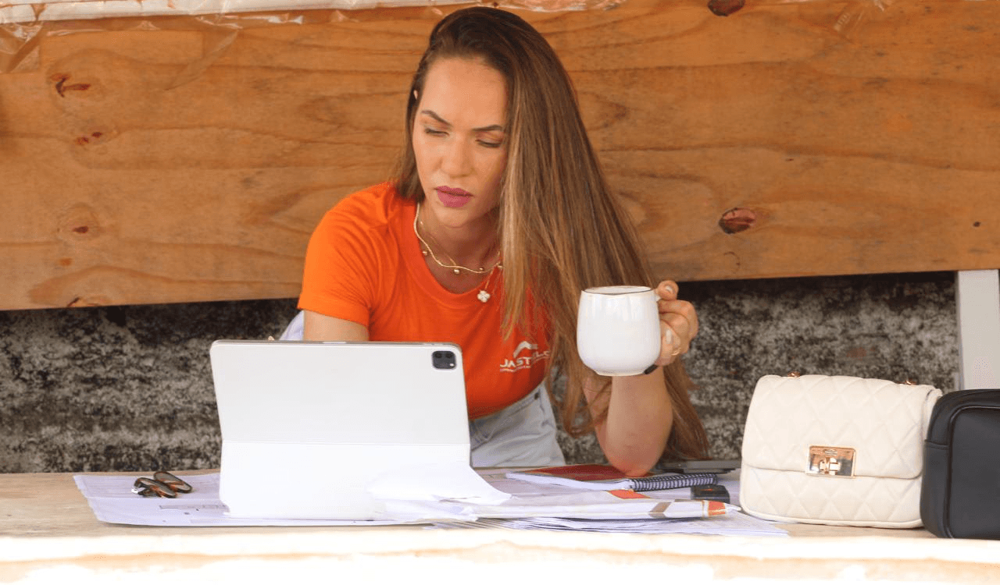
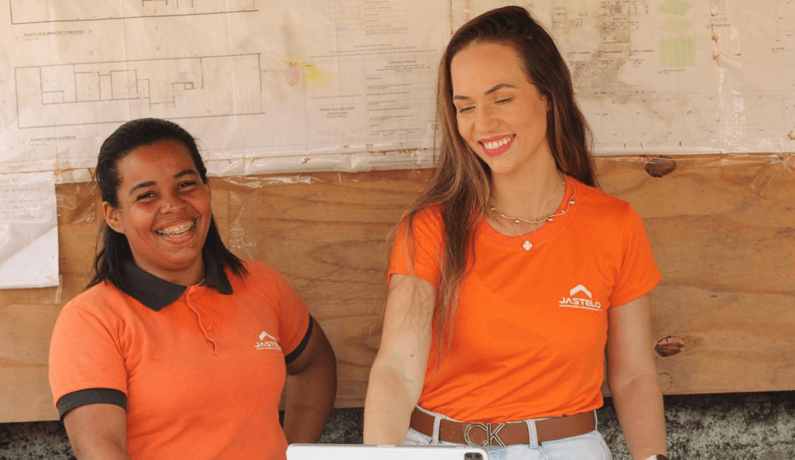
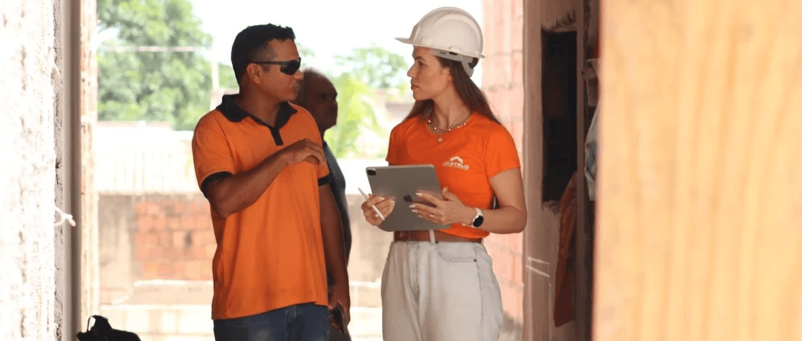
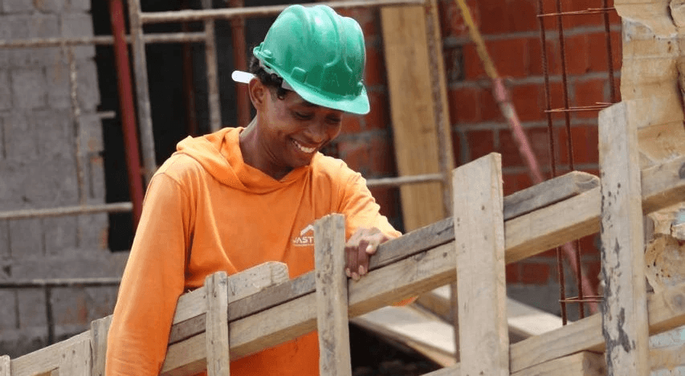
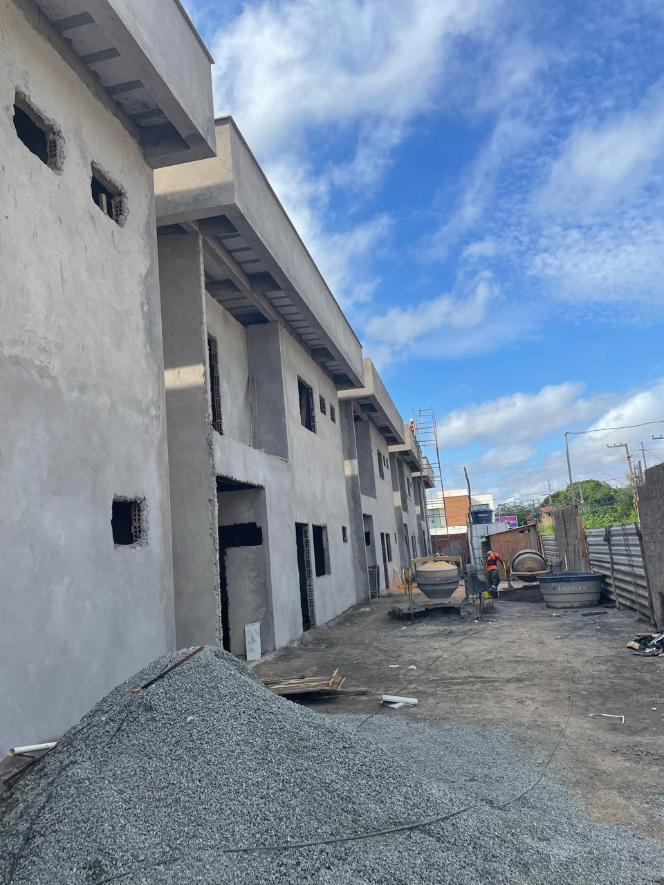
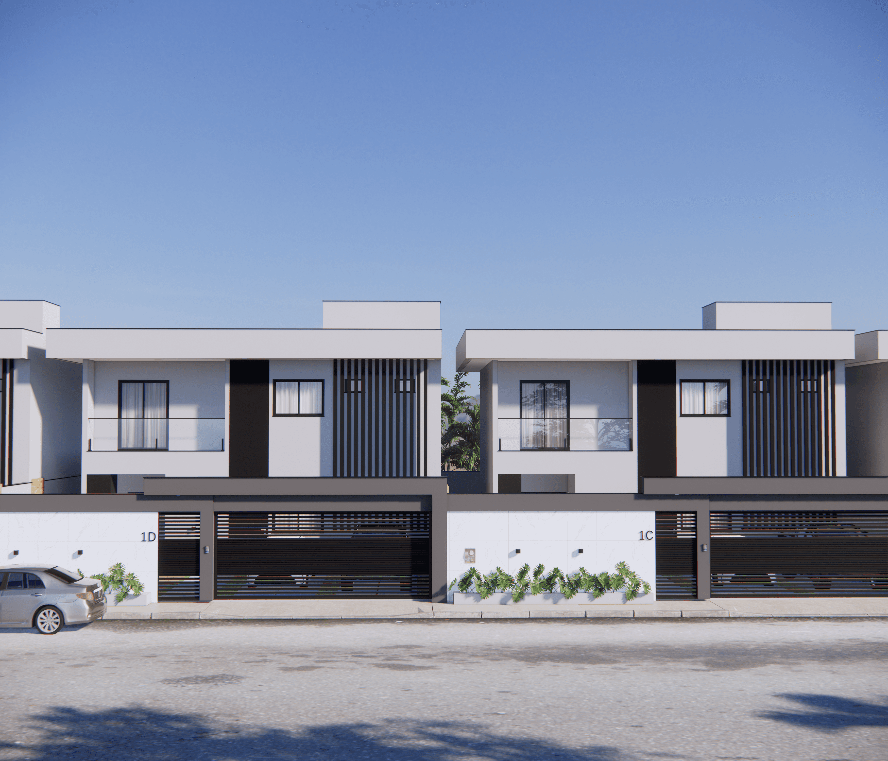
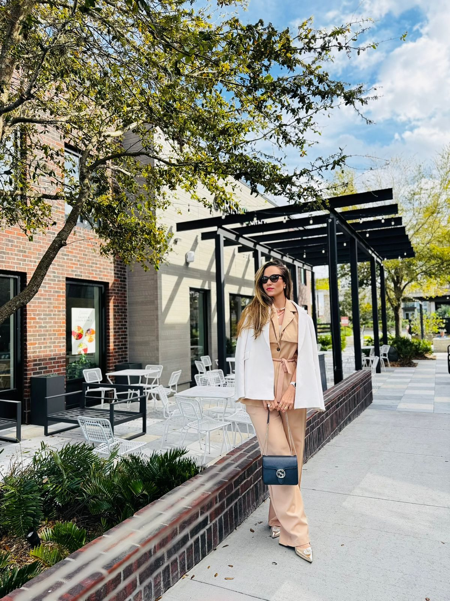

Nossa missão
Construir lares com propósito, beleza e excelência.
Mais do que casas, entregamos sonhos realizados com amor, técnica e cuidado para que cada cliente se sinta acolhido e parte da nossa história.
 Fale com a Jastelo →
Fale com a Jastelo →
Sobre nós
A JASTELO nasceu de um sonho que Deus plantou em nossos corações — e se transformou em propósito de vida.
Antes mesmo de existir como empresa, a semente já havia sido lançada em 2011, durante uma vigília. Por volta das 5h da manhã, um irmão profetizou ao João Antonio: “Você estará entre muitos tijolos — e será muito feliz.” Essa palavra ficou guardada no nosso coração, mesmo sem total compreensão.
Ao longo dos anos, sinais começaram a se revelar. Em 2012, João ajudou sua m²e na reforma da casa. Em 2019, concluímos juntos a construção da nossa própria casa — um sonho projetado por mim, Tharcyla, com cada detalhe pensado com amor: da terraplanagem à decoração final. Ainda assim, a promessa parecia apenas uma lembrança distante.
Foi somente em 2022, quando fundamos oficialmente a JASTELO, que o Senhor falou com clareza ao coração do João:
“Essa é a promessa. Esse é o propósito que escolhi para você.”
A partir desse momento, entendemos que a missão era maior do que imaginávamos. Mais do que construir casas, fomos chamados para edificar histórias. Lares que acolhem, inspiram, transformam.
Eu sou arquiteta desde 2017, e o João, administrador apaixonado por gestão e obras. Juntos, unimos técnica, sensibilidade e propósito para criar algo muito além da construção civil: uma experiência de vida, de fé e de pertencimento.
Somos uma empresa familiar, com raízes cristãs, que une arquitetura, gestão e espiritualidade. Cada projeto é único, porque cada família é única. Por isso, colocamos o coração em tudo o que fazemos — do primeiro traço ao último detalhe.
Na JASTELO, você não é só cliente. Você é parte da nossa história. E o nosso maior desejo é que, ao entrar em uma casa feita por nós, você sinta:
“Essa casa é minha, me representa, me acolhe.”
Seja bem-vindo à nossa família.
Seja bem-vindo à JASTELO — uma promessa que virou propósito, e que será reconhecida mundialmente até 2030.
Nossa missão
Mais do que casas, entregamos sonhos realizados com amor, técnica e cuidado para que cada cliente se sinta acolhido e parte da nossa história.
Nossa visão
Até 2030, ser referência internacional em arquitetura e construção de alto padrão, reconhecida por transformar projetos em experiências únicas, com fé, família e excelência em cada detalhe.
Nossos valores
Nossa essência
JASTELO não é apenas um nome. É a essência da nossa história, construída sobre a base mais forte que existe: a família.
Somos uma empresa familiar que nasceu de um sonho em comum e se tornou um propósito de vida: construir lares com amor, excelência e significado.
Assim como em uma obra, acreditamos que nenhuma estrutura se mantém de pé sem um alicerce sólido. E o nosso alicerce é a nossa união, nossos valores e a fé que nos guia.
Construímos com técnica, mas também com sentimento. Cada projeto carrega a força da nossa base, o cuidado nos detalhes e a missão de transformar sonhos em realidade.
“JASTELO. A base forte de toda construção.”
O que nos torna únicos
Excelência não é apenas o resultado final. É a forma como conduzimos cada escolha e cada etapa da construção.

Na nossa empresa, a arquitetura vai além do projeto. Com uma arquiteta sócia à frente, cada detalhe É cuidadosamente pensado desde a concepção até a entrega da obra. Esse envolvimento direto garante originalidade, fidelidade ao conceito e um olhar técnico comprometido com excelência e funcionalidade.


Mais do que processos bem executados, nossa gestão é conduzida por princípios. Planejamento estratégico, controle de qualidade e acompanhamento constante da obra são guiados por integridade, responsabilidade e o temor a Deus é nossa base em cada tomada de decisão.


Contamos com uma equipe própria, qualificada e alinhada aos nossos padrões técnicos e valores institucionais. Isso garante padronização, agilidade e qualidade em todas as etapas da obra. Aqui, cada colaborador entende que está construindo algo que vai muito além de paredes — está entregando propósito.


Trabalhamos com métodos construtivos modernos que otimizam tempo, reduzem desperdícios e garantem durabilidade. Cada técnica é escolhida estrategicamente para entregar obras seguras, sustentáveis e com alto desempenho. A inovação faz parte do nosso compromisso com a excelência.

Quem é a arquiteta
Desde pequena, a arquitetura já despertava algo em mim.
Cresci encantada com as casas, prédios e cenários dos filmes que assistia. Durante a infância, ao mudar de estado com a minha família, vivi de perto a construção da nossa casa idealizada pelo meu pai, um apaixonado por criar espaços acolhedores. A casa era construída aos poucos: ambientes espaçosos, molduras de gesso detalhadas, um jardim de inverno e cores diferentes em cada cômodo.
Sem perceber, aquele cuidado com cada espaço foi moldando a minha paixão.
Minha m²e, com sua simplicidade e amor, ensinou a importância de um lar acolhedor. Preparar a mesa para as refeições era um momento especial. Essas lembranças firmaram em mim o valor dos detalhes e da harmonia nos ambientes.
Ainda menina, eu organizava a casa, mudava os móveis de lugar, colecionava revistas de arquitetura e decoração e assim, sem entender muito, já sonhava em transformar espaços.
Quando prestei vestibular para Arquitetura e Urbanismo, ainda não compreendia a grandeza que esse mundo traria à minha vida. Aos 19 anos, casada e com um filho de seis meses, iniciei a faculdade. Cada disciplina, cada projeto estudado, cada traço desenhado, reafirmava dentro de mim a certeza de que eu estava no caminho certo.
A jornada foi desafiadora: dividida entre a maternidade, a vida pessoal e os estudos, enfrentei incertezas, convivendo com colegas mais experientes, alguns já com formação técnica. Mas a paixão superou os medos.
Em 2017, com dois filhos pequenos, defendi meu Trabalho de Conclusão de Curso, com o tema “A importância da arquitetura na promoção da saúde infantilíssima, inspirado pelas experiências que a vida materna me proporcionou.
Pouco depois de formada, tive a oportunidade de projetar e acompanhar a construção da nossa própria casa — um sonho que se tornou realidade. Durante essa obra, Deus nos presenteou novamente: a notícia da chegada da nossa filha caçula.
Foi uma experiência transformadora, onde pude aplicar conhecimentos técnicos, ousar em ideias inovadoras e viver, de fato, o que é construir um lar.
Ao longo dos anos, conciliei o amor pela arquitetura com a prioridade de acompanhar e educar nossos filhos. Tive a liberdade, apoiada pelo meu marido, de escolher os projetos que queria desenvolver, sempre entregando o melhor de mim para cada cliente, como fiz com a minha própria casa.
E foi justamente nesse processo que algo maior nasceu: a paixão pela construção também despertou no meu marido.
Guiados por Deus, nossos sonhos se conectaram e assim fundamos juntos a JASTELO Construções e Empreendimentos, onde atuo como cofundadora e arquiteta responsável pelo desenvolvimento dos projetos e acompanhamento da execução das obras.
“Cada novo projeto é uma nova história. Cada novo lar, uma nova realização.”
Vivo diariamente a missão de transformar sonhos em espaços que acolhem vidas com propósito, excelência e amor.